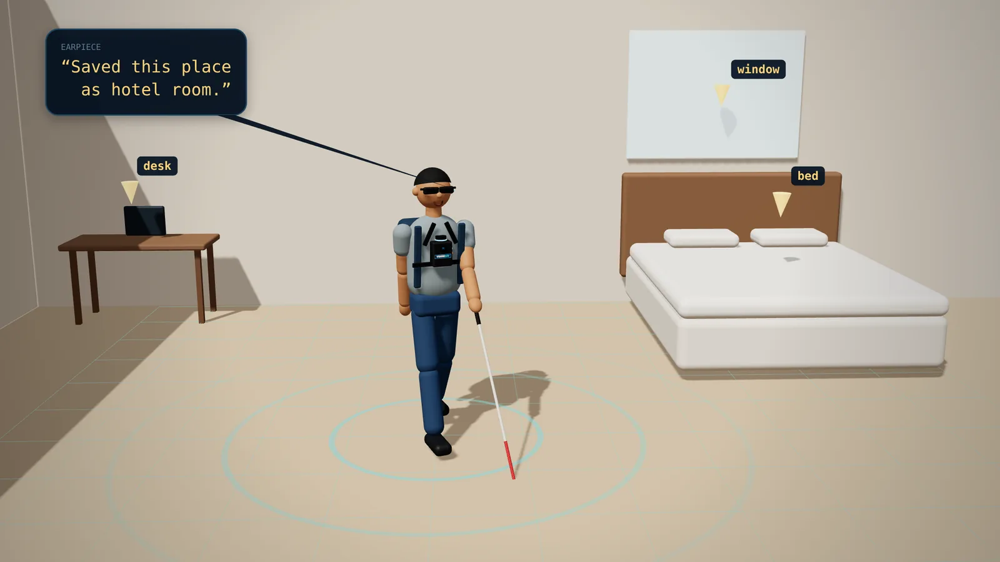
A room it has never seen
Tap SENSORS and walk around. The LiDAR traces the walls, the camera names the desk, the bed and the window, and each one is pinned to the map.
Earpiece“Saved this place as hotel room.”
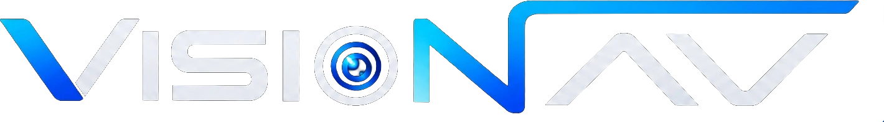
GitHub ↗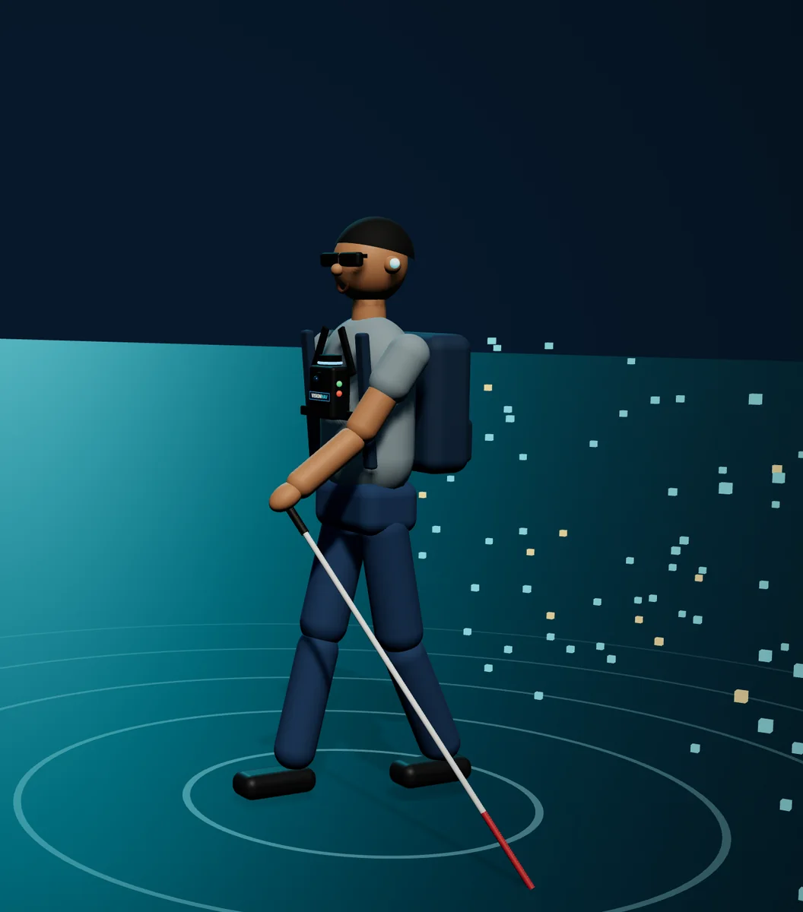
A chest-worn guide for blind and low-vision people. A camera and a LiDAR map the space as you walk. Ask for the chair by the door and it talks you there in clock directions, then guides your hand the last few inches.
The idea
A cane tells you something is there. Other devices warn you, or describe what's in front of you. VisionNav remembers the room, walks you to what you asked for, and guides your hand to it.
The real thing
The full story and live demos, recorded with the real rig: “VisionNav: what if AI could be your eyes?”
The prototype
LiDAR on top, a camera in front, buttons on both sides and a Raspberry Pi inside.


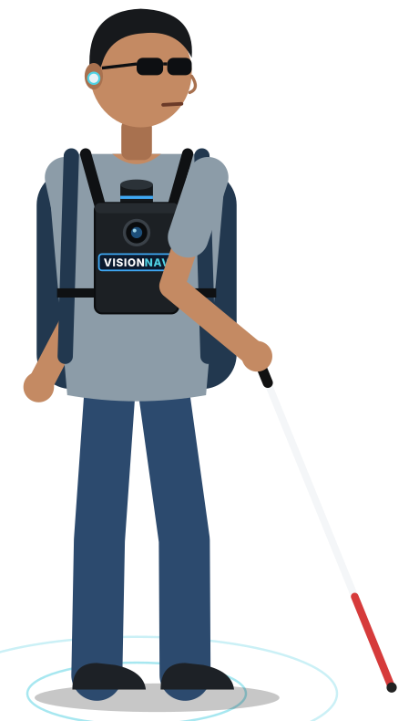
Raspberry Pi 5, LiDAR, camera, IMU and five buttons. It boots straight into ROS 2 and runs no AI itself.
Eight AI models, the room map and the route planner turn what the rig senses into a safe route. Fully offline, no cloud.
Piper's offline voice in one ear. One sentence, the most urgent thing first, then silence.
A day with VisionNav

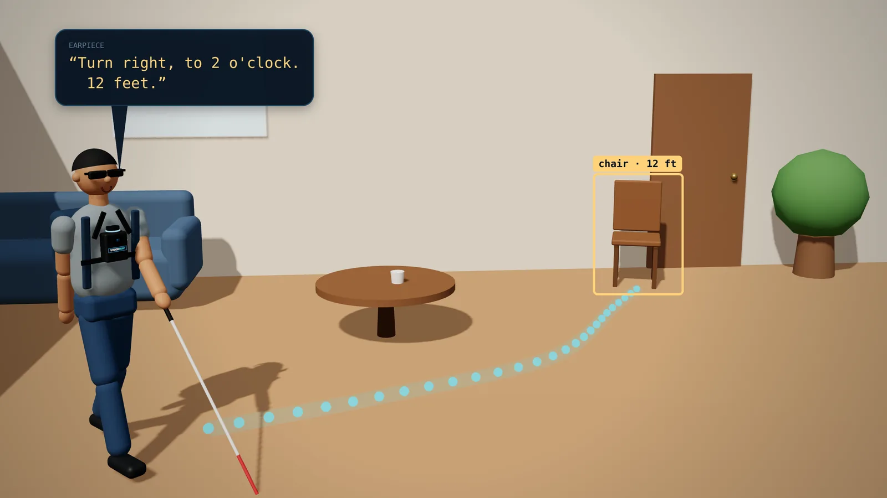
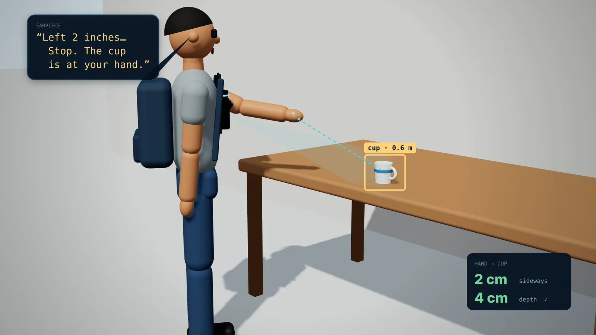
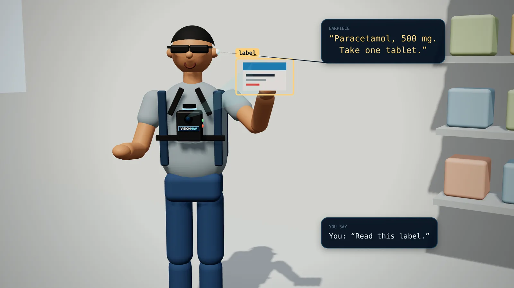
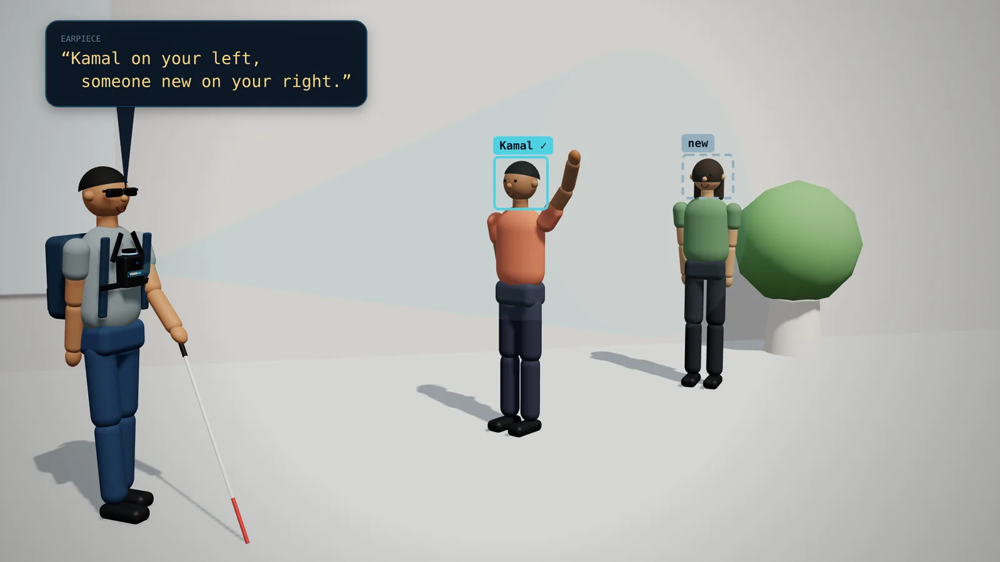
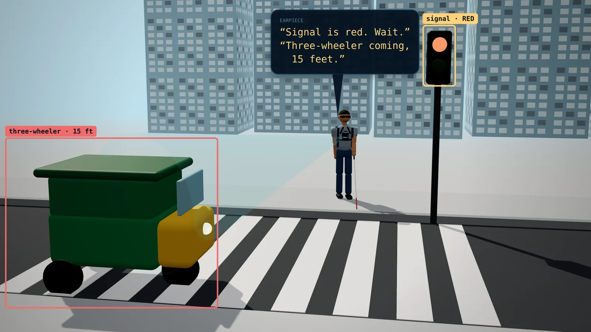
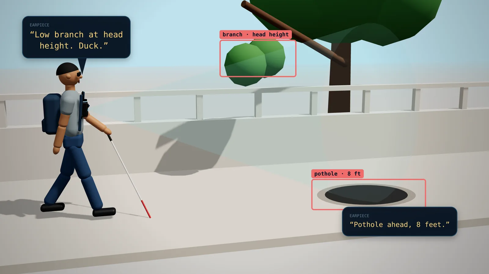
Everything it can do
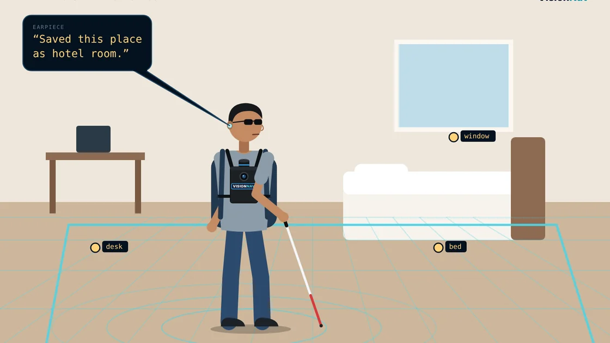
Objects stay on the map after you turn away. A moved object disappears once the camera looks again.
“The cup is behind you, 4 feet.”
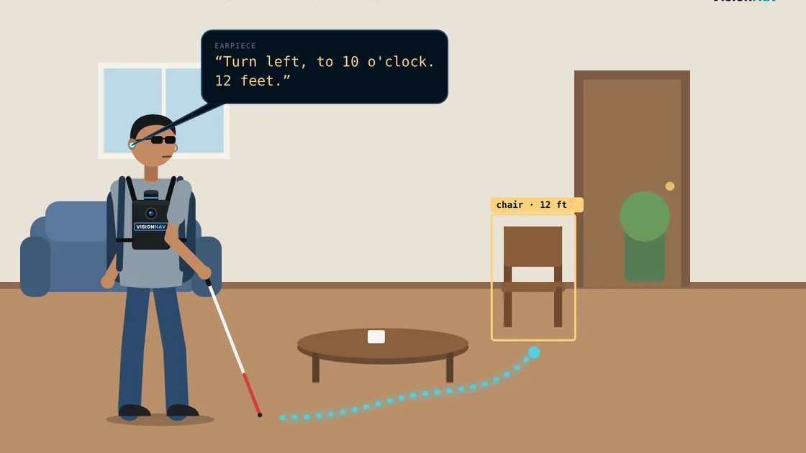
Ask in plain words. It plans around furniture and people and re-plans every second.
“Turn left, to 10 o'clock. 12 feet.”
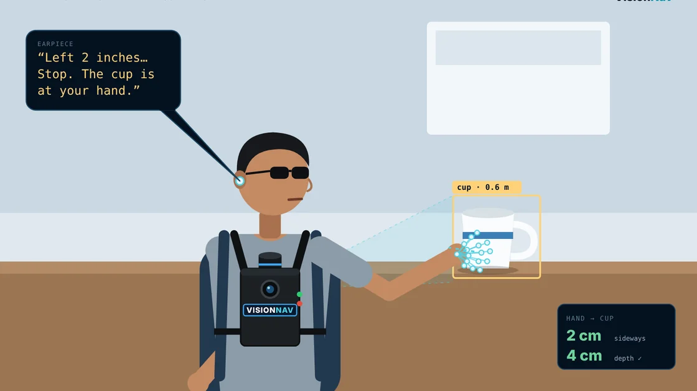
Tracks your hand and the object in 3D until they meet: within 5 cm sideways, 7 cm deep.
“Left 2 inches… Stop.”
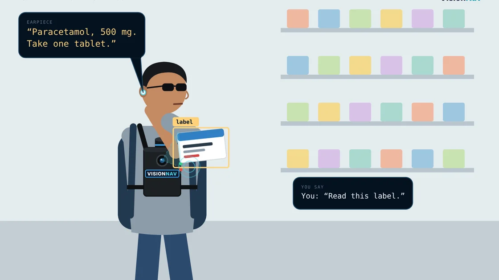
Hold LOOK and ask about what the camera sees. Qwen3-VL answers offline in about 2 seconds.
“The label says: paracetamol, 500 mg.”
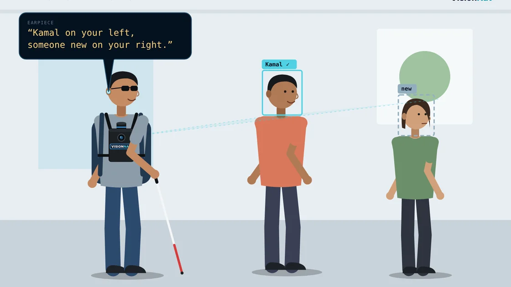
Say “Remember Kamal” once. Faces stay on the device and match in about 25 ms.
“Kamal on your left.”
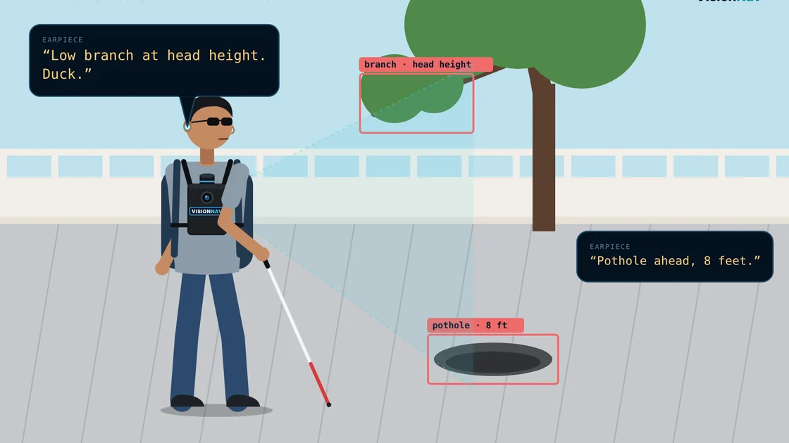
Holes, kerbs, head-height branches and vehicles. Warns under 6 s to impact, says “Stop” under 3 s.
“Low branch at head height. Duck.”
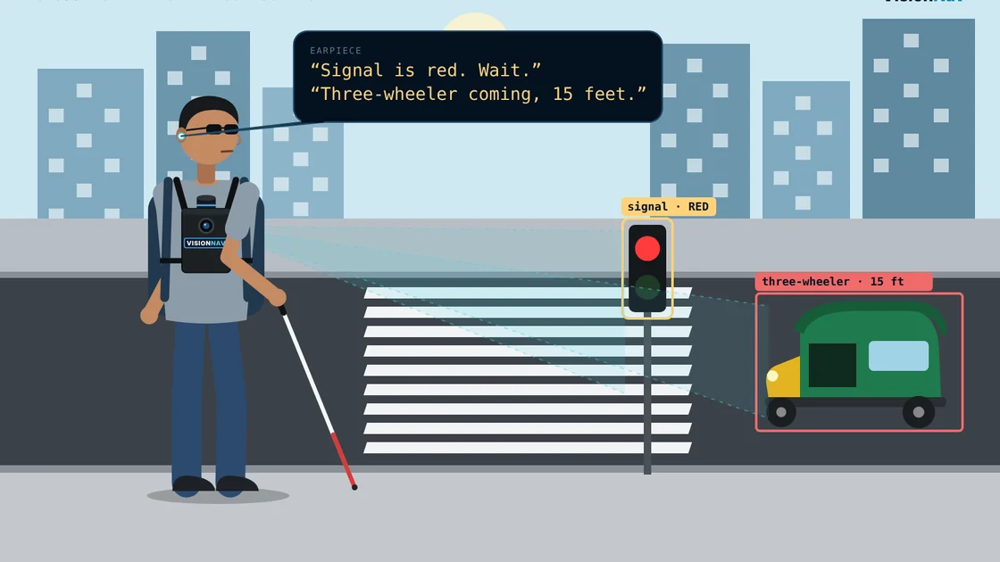
One sentence at a time, most urgent first. Nothing behind you is tracked or spoken.
“Stop. Three-wheeler coming, 15 feet.”
No cloud, no GPS, no account. Nothing is uploaded, and the indoor map is forgotten when the session ends, by design.
“Session ended. Map cleared.”
Watch it think
Short animations built from the system's real behaviour: the same clock directions, distances, thresholds and phrases the rig uses.
Tap a clip to play it
Inside
The camera sees, the LiDAR measures, the IMU feels each turn.
Objects are named, given a true distance with LiDAR-calibrated depth, and tracked with a Kalman filter.
Each object is pinned to the room map after 15+ sightings, so a false detection never sticks.
The most urgent thing first, at least 2.5 s apart. A line that's more than 1.5 s late is dropped.
Try it
Tap, hold (about a second) or double tap, and read what VisionNav would say. Keys 1–5 work too. Start with SENSORS.
Turn on JavaScript to try the buttons.
| Button | Tap | Hold | Double tap |
|---|---|---|---|
| SENSORS | Camera, LiDAR and IMU on | Sensors off | — |
| LOOK | Describe the scene | Ask a question | Vision AI off |
| MODE | Indoor ↔ outdoor | Close map and camera, forget the session | — |
| HAND | Hand mode on / off | Say an object, your hand is guided to it | Face mode on (again: face and hand off) |
| TALK | What is around me | Say where to go (indoor) | Stop navigation |
Results
| Capability | White cane | Obstacle wearables | Recognition devices | Robotic guides | VisionNav |
|---|---|---|---|---|---|
| Warns of obstacles | yes, by touch | yes | no | yes | yes |
| Says what objects are | no | partial | yes | no | yes |
| Remembers objects out of view | no | no | no | no | yes |
| Guides you to a described object | no | no | no | partial | yes |
| Guides your hand to the object | no | no | no | no | yes |
| No beacons or pre-made map | yes | yes | yes | often not | yes |
| Fully offline | yes | varies | partial | yes | yes |
See less. Know more.
Walk on your own.